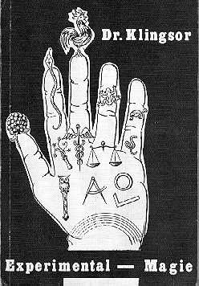

Back to Franz Bardon Research
Hemberger was a German Magician who wrote under the pseudonym "Dr. Klingsor" a book entitled "Experimental-Magie" on diverse magical themes published in 1976 by Schikovsky Publishers, Berlin.

His writing style, hopping unsystematically from one subject to the next, was most difficult to read and "Experimental-Magie" was in my opinion the product of a real chaotic mind, though the amount of data reported point to a very learned person. Hemberger was a close friend of Emil Stejnar until they fell out on some argument. Hemberger's character was a bit dubious if I can trust different sources because he liked for example to get lifelong borrowings (if you know what I mean) of e.g. occult books and manuscripts, when he visited his fellow magicians. He was an alcoholic addict and used heavy drinking also in his magical recipes and rituals (see the introduction to Georg Dehn's edition of "Abramelin" 1995) and finally died of cirrhosis of the liver. According to Stejnar he tried to escape this terrible fate as he realized death was approaching by signing a pact with Baphomet. But it was to late and all in vain because evil spirits serve or help you only if they can get something and a deadly ill person is of no use anymore. And so Hemberger died a couple of years ago (I don't know when exactly) a miserable death much to early for his age.
He based his conviction that Bardon borrowed most of his teachings from
Quintscher on his discovery of a manuscript of Quintscher's writings with
"Frantisek Bardon" on it, evidently used by Bardon as his copy of Quintscher's
writings.

This page hosted by  Get your own Free Home Page
Get your own Free Home Page